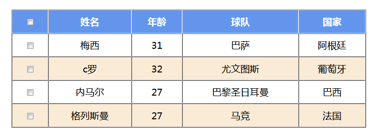

原文连接:https://www.cnblogs.com/apbddpz/p/11209758.html
今天我在学习jQuery的addClass操作时遇到了一个小问题，想来跟大家分享一下，避免初学者踩坑。
我的需求是制作一个表格，并让它隔行换色，在此基础上再加上鼠标悬浮变色的效果。（主要训练jQuery选择器和addClass）
但是在我真正操作后发现我的奇数行都变色了，而偶数行都没有变。具体效果如下：
原效果：

我们可以看到首行为一种颜色，奇数行无颜色，偶数行设置了背景颜色
鼠标悬浮在第一行的效果：
这里可以观察到“梅西”一行变换了颜色
鼠标悬浮在第二行的效果：

到了这里就发生了异常，整个表格居然没有发生变化
接下来我将放上我的源代码，大家可以先观察一下是哪里出现了错误。
jQuery相关源码：
<script type="text/javascript">
$(function(){
//全选全不选
$("#thch").click(function(){
var ch = $("#thch").prop("checked");
$("#tabl td input").prop("checked",ch);
})
//表格隔行换色
$("table tr:gt(0):odd").addClass("even")
//鼠标悬浮变色
$("table tr:gt(0)").mouseover(function(){
$(this).addClass("mv")
})
$("table tr:gt(0)").mouseleave(function(){
$(this).removeClass("mv")
})
$("table tr:gt(0)").click(function(){
var self = $(this)
var a = $("this input").prop("checked")
})
})
</script>
css相关代码：
#tabl{
width: 600px;
height: 200px;
margin-top: 200px;
text-align: center;
}
.tr1{
background-color: cornflowerblue;
color: white;
}
.mv{
background-color: rosybrown;
}
.even{
background-color: antiquewhite;
}由于我表格给奇数行先添加了一个even的css样式，在处罚鼠标悬浮事件后的添加的mv的css样式并没有生效，所以当时我首先想到的是addClass这个方法是否在添加过一次css样式后，再次添加时只在第一次添加的样式后边寻找，由于我的.even是写在.mv后的，所以没有找到。
为了测试我的上述所想，我便进行了测试，在.mv中添加一个font-size的属性，测试是否生效，测试结果如下：
可以清楚的看到字体变大了，然而颜色依旧没有变。
这就让我感到了更加困惑，问了一些同学也没有得到我想要的答案，由于天色已晚，我也没有什么思路，就暂时放下了这道题。第二天一早我在吃饭时突然想到是否与css的加载顺序有关，便匆忙的赶去验证我的想法。
我将.mv与.even互换了位置，效果如下：
这次终于对了！！！
在改对之后我便仔细去查了一下addClass的原理，它并不是将标签上本来就有的css样式覆盖，而是添加css，所以它也遵循css样式的加载顺序，一开始时.mv在.even的前边，所以要加载后边的样式，然而后边的样式还是.even，所以没有变换，将他们两个互换顺序后就可以看到变换了。
总结：
在使用addClass方法时，并不是将原有的css样式覆盖，而是将标签添加上css样式，添加后的加载与css文件中的顺序有关，也就是后写的覆盖前边的。